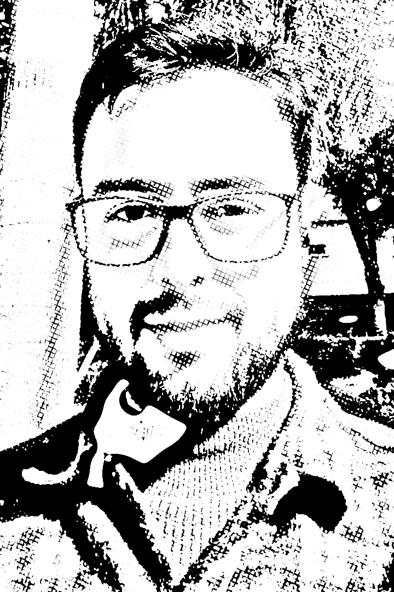

Sobre
Sou pesquisador em educação, com mestrado e doutorado (em andamento) na PUCRS. Também sou formado em Filosofia pela UFPel.
Pesquiso como as tecnologias digitais podem entrar nas aulas de filosofia. No mestrado, explorei o como ensinar (metodologia), enquanto no doutorado, me concentro em quem vai ensinar (formação docente).
Meus interesses incluem o ensino de filosofia, tecnologias na educação, filosofia da técnica, cibercultura, filosofia brasileira e metafilosofia, além da pesquisa baseada em design (DBR).
Faço parte do grupo de pesquisa Argos e da Associação Brasileira de Ensino de Filosofia (ABEFil).
Publicações
Livros
- Ensino de filosofia hipermidiático: guia do docente 2026 · Guia que apresenta possibilidades de integração das tecnologias digitais ao ensino de filosofia. Acessar (abre em nova aba)
- Olívia e a Internet 2024 · Livro infantil que aborda o uso consciente da internet. Acessar (abre em nova aba)
- Recursos Digitais na Escola: volume 4 2024 · O livro é uma coletânea de textos que discutem o papel transformador das tecnologias digitais na educação. Acessar (abre em nova aba)
- Do ensino de filosofia para o ensino de filosofi@: tessituras possíveis e necessárias 2022 · Livro que propõe uma fundamentação conceitual para o estabelecimento de um ensino de filosofia hipermidiático. Acessar (abre em nova aba)
Dissertação
- Proposta de ensino de filosofia hipermidiático: da teoria à prática 2023 · Dissertação que discute uma proposta de ensino de filosofia hipermidiático, discutindo os aspectos teóricos e propondo um modelo prático que foi testado em sala de aula. Acessar (abre em nova aba)
Ensino de filosofia
- Explorar para pensar: fundamentos e caminhos de uma filosofia hipermidiática 2025 · Capítulo publicado no livro "Filosofia e Humanismo: Interfaces Éticas em Diálogo – Festschrift a Draiton Gonzaga de Souza", que apresenta uma pesquisa sobre a integração das tecnologias digitais no ensino de filosofia (pág. 403). Acessar (abre em nova aba)
- Revisitando o Ensino de Filosofia Hipermidiático : princípios para a integração tecnológica 2025 · Princípios para a integração das tecnologias digitais ao ensino de filosofia a partir de uma perspectiva hipermidiática. Acessar (abre em nova aba)
- Ensino de filosofia e tecnologias digitais: uma proposta de integração 2025 · Capítulo publicado no livro "Recursos digitais na escola: volume 5", que apresenta uma pesquisa sobre a integração das tecnologias digitais no ensino de filosofia a partir de uma proposta hipermidiática (pág. 262). Acessar (abre em nova aba)
- Undergraduate Formation and Digital Technologies: The Case of the Philosophy Subject 2025 · Trabalho apresentado no ISLS 2025 Annual Meeting. Aborda a integração das tecnologias digitais na formação inicial de professores de Filosofia. Acessar (abre em nova aba)
- Hypermedia Philosophy Teaching: An Aproach 2024 · Trabalho apresentado no ISLS 2024 Annual Meeting. Apresenta uma proposta pedagógica hipermidiática para a manipulação e criação conceitual para fins educacionais. Acessar (abre em nova aba)
- O ensino de filosofia e a educação Maker: interlocuções possíveis e necessárias 2022 · Capítulo publicado no livro "Recursos digitais na escola: volume 2", que aborda a relação possível entre o ensino de filosofia e a educação Maker (pág. 141). Acessar (abre em nova aba)
- Da filosofia para a filosofi@: integração entre as tecnologias digitais e o ensino de filosofia em abordagem para além do instrumental 2022 · Trabalho apresentado no XIV ANPED SUL. Trata-se de um resumo expandido que discute uma abordagem não instrumental das tecnologias digitais no ensino de filosofia. Acessar (abre em nova aba)
- From teaching philosophy to teaching philosophy @: possible and necessary changes 2022 · Pôster apresentado no Annual Meeting of the International Society of the Learning Sciences (ISLS2022) - Japão. Acessar (abre em nova aba)
Educação
- Da oralidade à inteligência artificial: as tecnologias e suas aprendizagens 2024 · Capítulo publicado no livro "Recursos digitais na escola: volume 4", que aborda as diferentes tecnologias que transformam o pensamento e as aprendizagens que implicam (pág. 23). Acessar (abre em nova aba)
- O reflexo do passado é o presente: considerações sobre a história e a influência do virtual no ensino 2024 · A integração das tecnologias digitais no ensino de História. Acessar (abre em nova aba)
- Pandemia e educação: relatos da experiência na pós-graduação 2024 · Os impactos da pandemia de covid-19 nos processos de ensino e aprendizagem na pós-graduação. Acessar (abre em nova aba)
- Ética na educação digital: integrações essenciais para o ensino digital 2024 · Artigo publicado no contexto do VI Conferência Internacional de Filosofia da Educação e Pedagogia Crítica. O texto discute o papel da ética na educação digital. Acessar (abre em nova aba)
- Tecnologias da inteligência na educação: impactos e transformações 2023 · Artigo publicado no contexto do Congresso Internacional Movimentos Docentes 2023. O texto discute a integração tecnológica na educação. Acessar (abre em nova aba)
- Pesquisa em educação no contexto da cultura digital: reflexões sobre alguns dilemas éticos 2023 · Capítulo publicado no livro "Recursos digitais na escola: volume 3", que discute algumas problemáticas éticas na pesquisa em educação no contexto da cibercultura (pág. 99). Acessar (abre em nova aba)
- Cibercultura e criação conceitual 2022 · Artigo publicado no Acta do VIII Seminário Internacional de Educação e Tecnologias, organizado pela URI de Frederico Westphalen. Relaciona a criação conceitual com a experiência do sujeito no ciberespaço. Acessar (abre em nova aba)
- Discutindo movimentos: uma aproximação entre os ciclos urbanos e naturais 2021 · Ensaio que explora as possibilidades de experiência do mundo e suas diferenças a partir do uso da tecnologia. Acessar (abre em nova aba)
- 'Ser e fazer': uma proposta de oficina no contexto do Ensino Médio 2019 · Proposta de oficina de ensino de filosofia que se vale da estética como instrumento de aprendizagem. Acessar (abre em nova aba)
Filosofia
- Entre a natureza e o abandono 2023 · Resenha do artigo "Observações sobre a natureza (physis) em Heidegger" de Gabriel de Almeida Barros, e uma breve reflexão sobre o estatuto ontológico do abandono. Acessar (abre em nova aba)
- O desejo singular no cotidiano do idoso 2020 · Breve problematização da percepção do desejo dos idosos durante o período pandêmico. Acessar (abre em nova aba)
- Notas sobre o ensino de filosofia enquanto um problema filosófico 2019 · Discussão sobre o ensino de filosofia enquanto um problema filosófico a partir do pensamento de Martin Heidegger. Acessar (abre em nova aba)
- A perspectiva hermenêutica-fenomenológica em Heidegger: sobre o esquecimento do 'ser' 2019 · Breve apresentação do problema do esquecimento do ser em Martin Heidegger. Acessar (abre em nova aba)
- Oficina do "deboísmo": bem-estar e integração no contexto do Ensino Médio 2019 · Proposta de oficina que visa trabalhar o conceito de felicidade de forma sensível e acolhedora no Ensino Médio. Acessar (abre em nova aba)
Pesquisa baseada em design (DBR)
- Design-Based Research: uma abordagem metodológica para estruturar a pesquisa interdisciplinar em educação 2026 · Artigo que apresenta a DBR, destaca suas vantagens e ilustra sua aplicação com dois resultados de pesquisa. Acessar (abre em nova aba)
- Pesquisa baseada em design (DBR): reposicionando estudos interdisciplinares para uma perspectiva metodológica integrada 2026 · Uma apresentação da pesquisa baseada em design (DBR). Acessar (abre em nova aba)
- Aproximação de saberes tácitos e acadêmicos de forma transversal utilizando a abordagem de pesquisa baseada em design - DBR 2024 · A DBR como ferramenta para aproximar os saberes tácitos e acadêmicos. Acessar (abre em nova aba)
Links
Indicações de leitura, ferramentas e sites que recomendo.
- Filosofía&Co (abre em nova aba) Portal de filosofia, pensamento e cultura em língua espanhola.
- Editora Fi — Catálogo de verbetes (abre em nova aba) Verbetes publicados pela Editora Fi, editora brasileira de acesso aberto.
- ABEFil (abre em nova aba) Associação Brasileira de Ensino de Filosofia.
- ANPOF (abre em nova aba) Associação Nacional de Pós-Graduação em Filosofia.
- ANPEd (abre em nova aba) Associação Nacional de Pós-Graduação e Pesquisa em Educação.
- ALFE (abre em nova aba) Associação Latino-Americana de Filosofia da Educação.
- Blog do Pierre Lévy (abre em nova aba) Blog do filósofo Pierre Lévy, onde traz textos em inglês e francês sobre sua atividade de pesquisa.
- Álvaro Vieira Pinto (abre em nova aba) Site sobre a vida e a obra do filósofo brasileiro Álvaro Vieira Pinto.
- Cibermuseu (abre em nova aba) Museu das Culturas Digitais: uma "máquina" teórica para estudar a musealização de objetos digitais.
- Filosofia Hipermidiática (abre em nova aba) Ideias para inovar o ensino de Filosofia através da integração com as tecnologias digitais.
- Filosoficamente Ocupada (abre em nova aba) Blog de uma professora portuguesa de Filosofia, que compartilha diversos conteúdos e abordagens diferentes que produz na sala de filosofia em que atua.
- Filosofia para crianças (abre em nova aba) Site que propõe o desenvolvimento da prática filosófica com crianças.
- Filosofia na sala de aula (abre em nova aba) Blog do projeto de extensão sobre a Filosofia e seu ensino - UNIRIO.
- OBSEFIS (abre em nova aba) Observatório do Ensino de Filosofia em Sergipe (OBSEFIS).
- Adam Harvey (abre em nova aba) Arte e Pesquisa sobre vigilância, privacidade e visão computacional.
- Micelio (abre em nova aba) Arquivo vivo de ideias, conteúdos e explorações sobre inteligência artificial e cultura digital (em espanhol).
Contato
Para conversas sobre pesquisa, convites e colaborações: